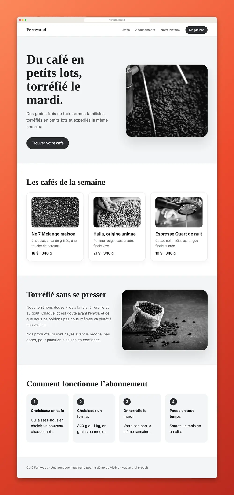

Capture d’écran de page entière dans Chrome
Vérifié le 4 novembre 2026. Écrit pour Vitrine 1.2.2.
Chrome n’a pas de bouton « page entière », mais il sait le faire. Il y a trois façons : une commande cachée dans les outils de développement (gratuite, rien à installer), l’impression en PDF, et une extension. Voici chacune, étape par étape, et quand choisir laquelle.
Façon 1 : la commande intégrée à Chrome (DevTools)
Elle fonctionne sous Windows, Mac et Linux, sans rien installer.
- Ouvrez la page. Faites-la défiler une fois jusqu’en bas, pour que les images différées se chargent.
- Ouvrez les outils de développement : F12 (Windows) ou Cmd + Option + I (Mac). Un clic droit, puis Inspecter, fonctionne aussi.
- Ouvrez le menu de commandes : Ctrl + Maj + P (Windows) ou Cmd + Maj + P (Mac).
- Tapez « screenshot » et choisissez la commande Capture full size screenshot. Si vos outils de développement sont en français, le nom de la commande peut être différent.
- Chrome enregistre un PNG dans votre dossier Téléchargements (ou vous demande où, si vous avez activé cette option).
C’est tout le truc. C’est gratuit, et fiable sur les articles et les fiches de produits ordinaires.
Ce qu’elle ne fait pas : elle prend la page telle quelle. Un bandeau de témoins, une fenêtre surgissante ou une publicité se retrouvent dans l’image. Les pages qui défilent dans un cadre, comme beaucoup de boîtes de réception et de tableaux de bord, peuvent donner un seul écran. Les très longues pages sont son point faible : vérifiez le bas de l’image. Et le fichier est un PNG tout nu : ni cadre, ni lien source, ni date.
Façon 2 : imprimer en PDF
Appuyez sur Ctrl + P (Windows) ou Cmd + P (Mac), réglez la destination sur l’option d’enregistrement en PDF (Save as PDF en anglais), puis enregistrez. Vous obtenez un document en pages, avec du vrai texte que l’on peut sélectionner. Ce n’est pas une image de la page telle que vous la voyez : la page est découpée en feuilles, et beaucoup de sites changent de mise en page à l’impression. Cela convient aux articles que l’on veut lire ou classer. Nous en parlons en détail dans capture d’écran de page entière en PDF.
Façon 3 : une extension d’une seule touche (Vitrine)
Une extension fait le défilement à votre place. Vitrine est une extension Chrome gratuite conçue pour cela.
- Ajoutez Vitrine depuis le Chrome Web Store. Cliquez sur l’icône en forme de pièce de casse-tête (Extensions) dans la barre d’outils de Chrome et épinglez-la.
- Ouvrez la page voulue.
- Appuyez sur Alt + Maj + S (Windows) ou Option + Maj + S (Mac). Vous pouvez aussi cliquer sur l’icône de Vitrine et choisir Page entière.
- Vitrine fait défiler la page, charge d’abord les images différées et n’affiche les en-têtes fixes qu’une seule fois, pas à chaque écran.
- Le Studio s’ouvre avec votre capture. Cliquez sur Copier pour la coller directement dans Slack, un courriel ou Notion, ou sur Télécharger pour l’obtenir en PNG, JPG ou PDF.

Ce que Vitrine ajoute à la capture simple
- Les bandeaux de témoins, bulles de clavardage, fenêtres surgissantes et publicités sont masqués avant la prise de vue, puis remis en place. Rien n’est bloqué sur la page elle-même. Les deux réglages sont activés par défaut.
- Les pages qui défilent dans un cadre (boîtes de réception, tableaux de bord) sont capturées en entier.
- Les très longues pages restent nettes. Quand une page est trop haute pour une seule image nette, Vitrine garde aussi des copies nettes en pages séparées, à enregistrer en ZIP ou en PDF, à côté d’une image complète réduite. Appuyez sur Échap sur une très longue page pour arrêter et garder ce que vous avez.
- Trois autres façons de capturer : la zone visible (Alt + Maj + V), une zone que l’on trace (Alt + Maj + R) et un seul élément, comme une carte ou un graphique (Alt + Maj + E). Sur un Mac, utilisez Option au lieu de Alt. Si un raccourci ne fait rien, une autre extension l’utilise peut-être : changez-le à l’adresse chrome://extensions/shortcuts.
- Les courriels et clés d’API peuvent être floutés avant la prise de vue.
- Vos captures ne quittent jamais votre ordinateur. Aucun compte, aucun pistage.
Le Studio sert à rendre la capture présentable : une fenêtre de navigateur, un arrière-plan, des flèches, des cadres, des étapes numérotées et du flou.
Quelle façon choisir?
- Une capture rapide d’une page simple, de temps en temps : DevTools. C’est gratuit et déjà dans Chrome.
- Un document à lire ou à classer : l’impression en PDF.
- Des pages que vous capturez souvent, des pages pleines de bandeaux et de publicités, de longues pages, ou des captures que vous montrerez à quelqu’un : une extension.
Ce que coûte Vitrine
Enregistrer, copier et exporter en PNG, JPG et PDF est gratuit, pour de bon. Pro coûte 24 $ US une seule fois, sans abonnement : couleurs de marque, votre style enregistré, formats pour les réseaux sociaux et tampon de preuve. Le prix de lancement est de 19 $ US jusqu’au 30 novembre 2026. Voyez la comparaison des prix ou l’accueil de Vitrine.
À lire aussi : capture d’écran d’une page Web sans publicité ni fenêtres surgissantes.